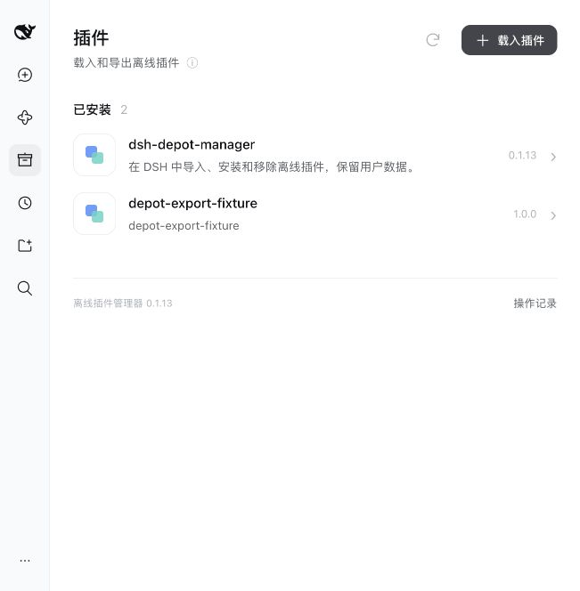
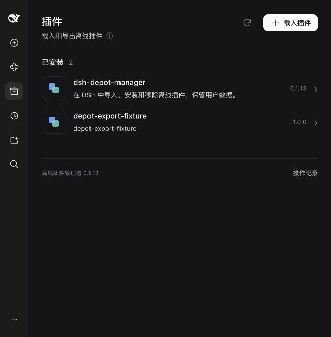
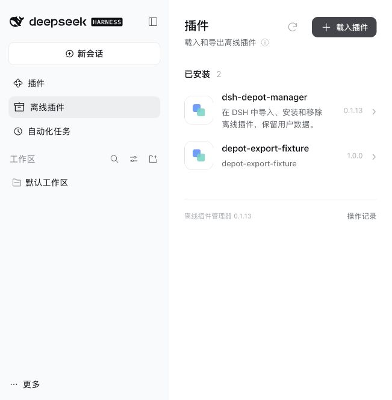
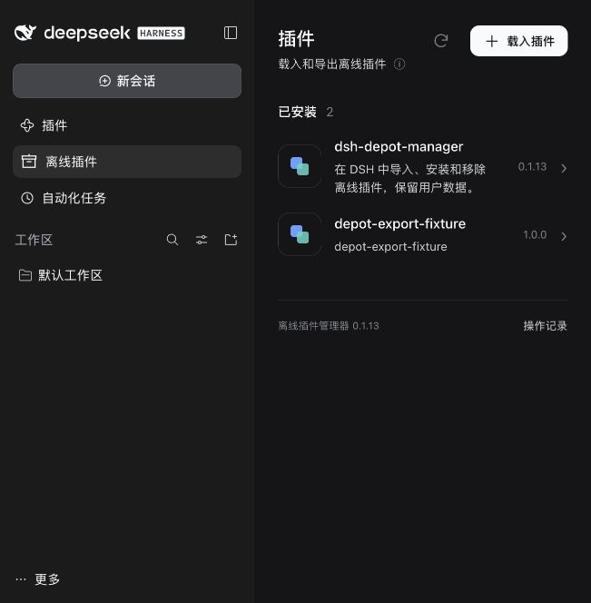
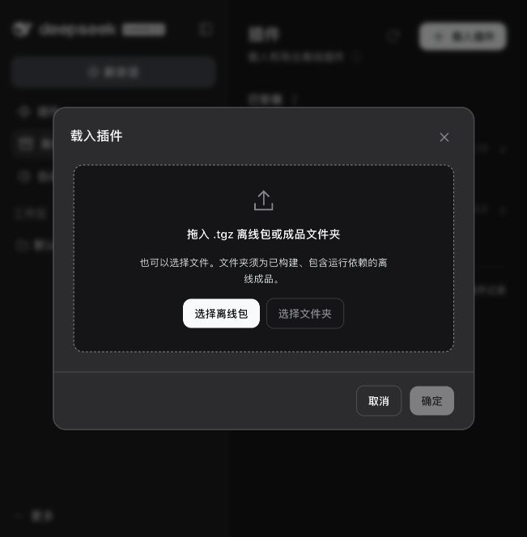

在独立配置目录中安装并运行原版 DSH 0.2.1-rc.2 Web，使用官方设置切换浅色、深色、跟随系统。未修改日常 Desktop 配置。
页面使用 Svelte；通过官方客户端模块加载器和 main、sidebar.panellist 插槽进入宿主。主题变量穿过隔离样式的 ShadowRoot 继承，因此主题切换无需刷新。右下角悬浮链接已移除。





实际检查：列表只显示第三方插件、详情保留导出入口且不修改宿主 hash、弹窗可关闭、旧 /api/depot/manager 链接重定向到宿主并选择管理页。根页面实际公布浏览器模块，无固定浮动链接。
完整回归：Web 14 项通过；管理器 153 项通过，3 项平台条件跳过；分发 122 项通过。新增用 VM 执行实际构建字节，验证官方加载器注册和外部 React 复用；左侧和主面板使用同一 ID，并验证注销。
macOS 标题栏按宿主提供的间距变量避让。未在日常 Desktop 或此 Mac 之外的 Windows/Linux 界面执行本轮验证；原生平台发布报告另行记录。查看结构化记录